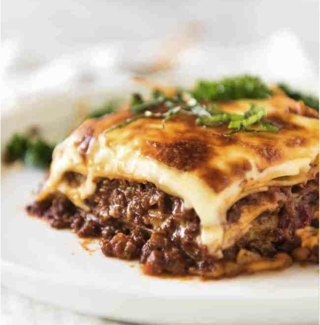

One of the most loved foods in the world is finally here! This is a traditional Italian Lasagna, made the Italian way with layers of slow cooked Bolognese ragu and cheese sauce. No ricotta – that’s the American-Italian version.
Onion, garlic, carrot and celery
Beef
Canned tomato and tomato paste
Red wine-for extra flavour!
Seasonings-beef bouillon cubes (stock cubes), bay leaves, thyme, oregano, Worcestershire sauce
Onion, garlic, carrot and celery
Onion, garlic, carrot and celery